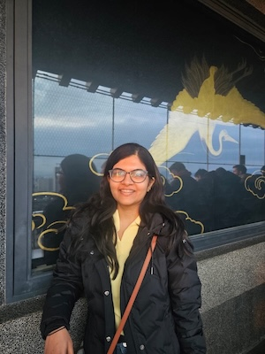

Anjali Yelikar
GRAVITY Postdoctoral Scholar, Department of Physics & Astronomy
Vanderbilt University · Nashville, TN, USA

-->Overview
I am a GRAVITY Postdoctoral Scholar in the Department of Physics & Astronomy at Vanderbilt University, working on gravitational-wave astrophysics.
I completed my Ph.D. in Astrophysical Sciences and Technology at the Rochester Institute of Technology in 2024, advised by Prof. Richard O'Shaughnessy, with a dissertation on binary neutron stars — from interpreting individual events to inferring population properties. Before that, I was a Junior Research Fellow at the Chennai Mathematical Institute, and I hold a BS-MS in Physics (minor in Chemistry) from IISER-Thiruvananthapuram.
Research Summary
I study gravitational waves from compact binary mergers, focusing on how accurately we can infer their properties and what they reveal about neutron stars and gravity.
- Parameter Estimation & Waveform Systematics Rapid inference of binary properties, and how waveform-model choices bias the results.
- Neutron Star Populations & the Nuclear EOS Using binary neutron star populations to constrain the nuclear equation of state.
- Multiband & Lunar GW Astrophysics Science prospects for lunar gravitational-wave detectors working alongside Earth-based ones.
Education
-
Ph.D., Astrophysical Sciences and TechnologyRochester Institute of Technology, NY, USA — Dissertation: "Binary Neutron Stars: From Interpreting Individual Events to Inferring Population Properties"Aug 2021 – Aug 2024
-
M.S., Astrophysical Sciences and TechnologyRochester Institute of Technology, NY, USAAug 2019 – Aug 2021
-
BS-MS, Physics (Minor: Chemistry)IISER-Thiruvananthapuram, Kerala, IndiaAug 2013 – Jun 2018
Publications
-
Yelikar, A. B., Jani, K. Binary Neutron Stars from the Moon: Early Warnings and Precision Science for the Artemis Era.
Class. Quantum Grav. 43, 125008 (2026)
-
Pichardo Marcano, M., Yelikar, A. B., Jani, K. Massive Double White Dwarf Binary Mergers from the Moon: Extending the Reach of Multi-messenger Astrophysics.
Astrophys. J. 992 (2025) 1, 16
-
Ruiz-Rocha, K., Yelikar, A. B., Lange, J., Gabella, W., Weller, R. A., O'Shaughnessy, R., Holley-Bockelmann, K., Jani, K. Properties of 'Lite' Intermediate-Mass Black Hole Candidates in LIGO-Virgo's Third Observing Run.
ApJL 985 L37 (2025)
-
Yelikar, A. B., O'Shaughnessy, R., Wysocki, D., Wade, L. Effects of waveform systematics on inferences of neutron star population properties and the nuclear equation of state.
Submitted to Physical Review D
-
Yelikar, A. B., O'Shaughnessy, R., Lange, J., Jan, A. Z. Waveform systematics in gravitational-wave inference of signals from binary neutron star merger models incorporating higher-order modes information.
Phys. Rev. D 110, 064024 (2024)
-
Wofford, J., Yelikar, A., Gallagher, H., Champion, E., Wysocki, D., Delfavero, V., Lange, J., Rose, C., Valsan, V., Morisaki, S., Read, J., Henshaw, C., O'Shaughnessy, R. Improving performance for gravitational-wave parameter inference with an efficient and highly-parallelized algorithm.
Phys. Rev. D 107, 024040 (2023)
-
Jan, A. Z., Yelikar, A. B., Lange, J., O'Shaughnessy, R. Assessing and marginalizing over compact binary coalescence waveform systematics with RIFT.
Phys. Rev. D 102, 124069 (2020)
-
Krishnendu, N. V., Yelikar, A. B. Testing the Kerr nature of supermassive and intermediate-mass black hole binaries using spin-induced multipole moment measurements.
Class. Quantum Grav. 37 (2020) 205019